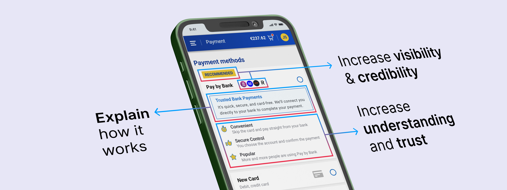
UX DESIGN CASE STUDY
Open Banking
Overview
For sometime now, Open Banking has been hailed as the future of payments. Faster, cheaper, and more secure than traditional card rails, it allows consumers to pay directly from their bank accounts while giving merchants a lower-cost, low-fraud alternative.
But despite years of investment, regulation, and innovation, adoption among everyday users remains limited. My starting point when I began exploring this was: Why?
There's a multitude of factors at play, but having conducted my own research into this area, the answer seems to me to be that trust is fragile and (especially in payments) trust isn’t just built through regulation or infrastructure... it’s built through design.
THE RESEARCH
A mixed methods approach
I used my studies as part of the MA in User Experience and Service Design that I completed in 2025 to explore how UX could play a role in improving adoption of Open Banking payments.
During the initial discovery phase I interviewed my colleague Cormac Bane, an Open Banking expert at Global Payments, on the challenges Open Banking faces. Amongst the many practical insights Cormac shared, he stressed that major brands must champion Open Banking for it to gain traction, noting its absence of a “TFL moment”, ie. a tipping point like Transport for London’s role in popularising contactless payments.
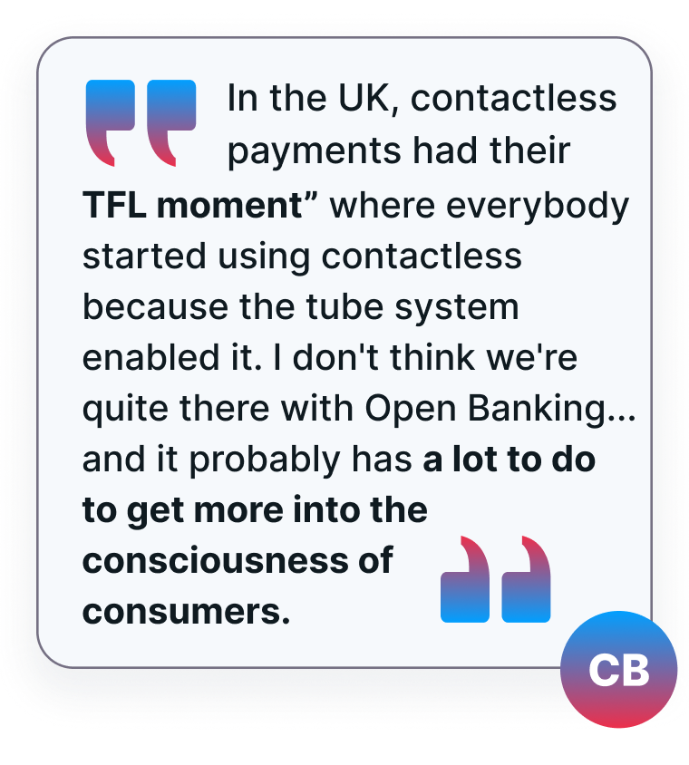
Late last year, it was announced that Ryanair were rolling out an Open Banking payment method called "Pay by Bank". Given the airline's high profile and large e-commerce traffic, did this have the potential to be part of Open Banking's "TFL moment"? To explore this in greater depth, I focused in on this use case to evaluate an existing experience through a human-centred lens.
In particular, I wanted to get a sense of users' perception of trust in using Open Banking payment methods, and to what degree User Experience design could help shift those perceptions. To do this I leaned on research developed by Denise Christine Rieser and Orland Bernhard, dissecting Trust into three sub-scales (Benevolence, Integrity and Competence) and using sets of Semantic Differentials to measure users' subjective perception of each.
The process involved a mixed-methods approach:
The development of an interactive prototype of Ryanair’s Pay by Bank journey for use in research, as well as enabling a detailed Cognitive Walkthrough and the identification of potential usability issues.
An initial unmoderated User Study conducted using the prototype to gather user insights and to assess perceived trust.
A Design phase utilising insights from the first User Study to re-design the experience, incorporating updated layouts, rewritten UX copy and stronger contextual clues.
A second User Study to evaluate the re-designed prototype, gathering the same data as the first. Analysis of both data sets informed conclusions as to whether the new experience improved adoption rates and strengthened perceptions of trust.
USER STUDY 1
Assessing Ryanair's 'Pay by Bank' Experience
Participants completed two key tasks with qualitative and quantitative data collected via audio and video recordings, follow-up questions and Semantic Differentials.
And the results were clear: most people didn't choose Pay by Bank, with only 20% of participants indicating that it would be the payment method they would choose to purchase their flights from the available methods on Ryanair's website.
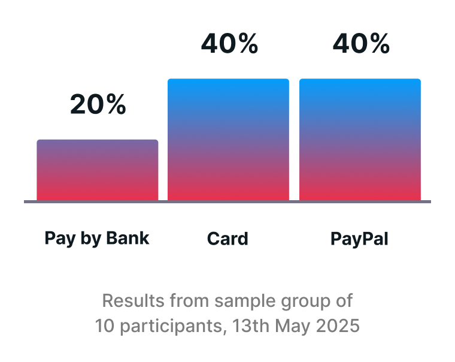
Qualitative feedback from participants also made it clear that they simply lacked awareness of what Pay by Bank was or the benefits it offered.
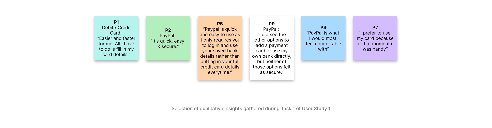
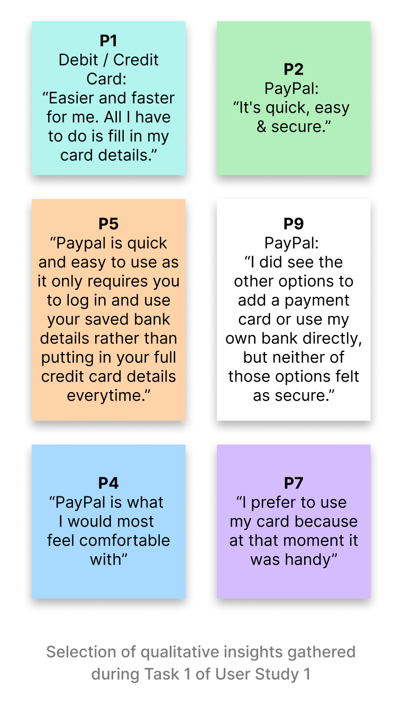
But once they completed a payment using Pay by Bank in the second task, they found it well-intentioned, honest, secure, as well as reliable and capable overall.
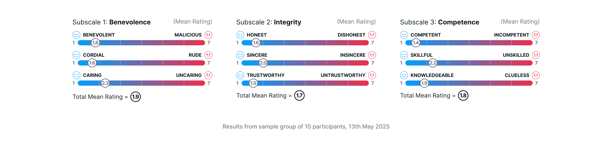
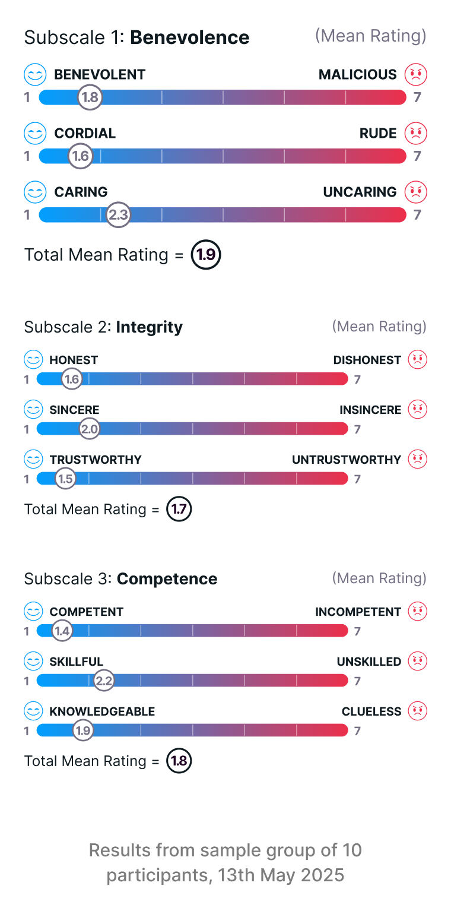
So, while few users initially chose Pay by Bank, most trusted it after using it, suggesting that boosting adoption depends less on the process itself, and more on pre-payment education and making the option more visible and appealing at the point of choice.
DESIGN PHASE
Re-designing the experience
Armed with the insights from the first User Study, I then set about re-designing the experience, looking to build trust in three key ways.
First, I focused on building user confidence throughout the journey – adding step counters, writing UX copy, adding more visible controls, explainer text and reducing ambiguity through progressive disclosure.
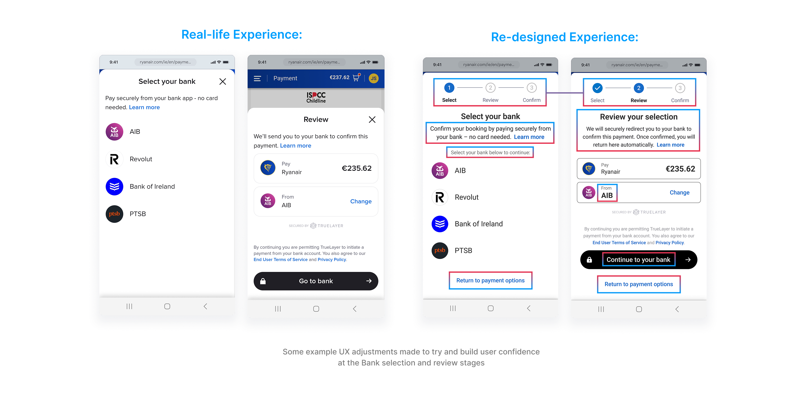
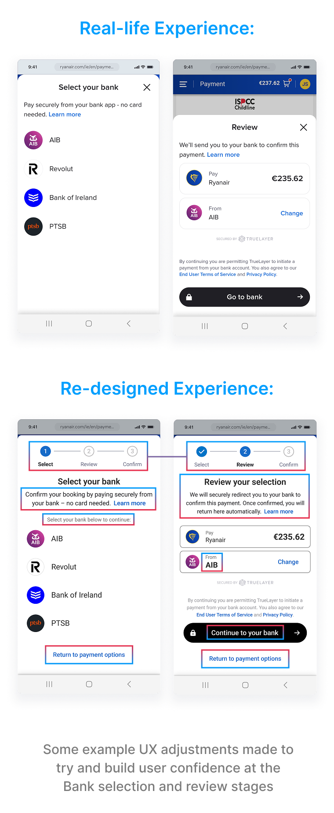
Second, I looked to improve "pre-payment education", making the Pay by Bank option more visible, more appealing, and easier to understand right from the start.
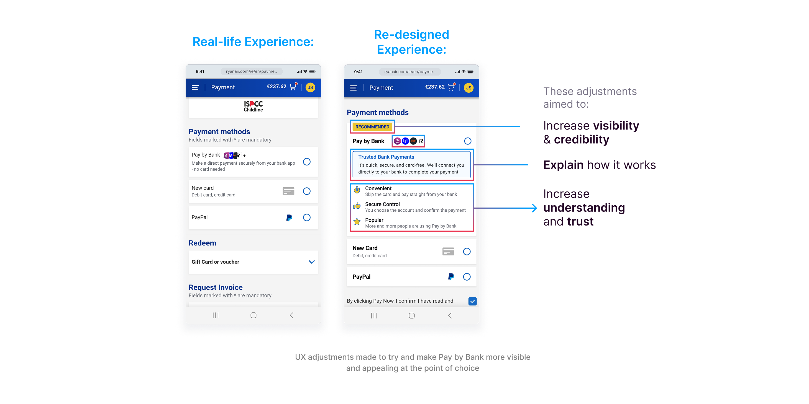
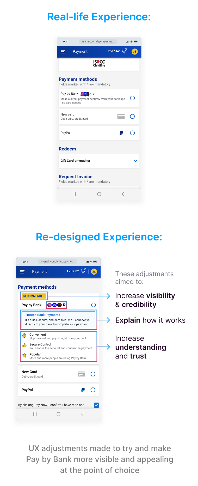
And third, I introduced refinements to the interaction design to make the whole experience feel smoother, more responsive and competent.
USER STUDY 2
Evaluating the re-designed experience
I then tested the re-designed experience in a second user study – the same study structure as the first user study, the same tasks, the only difference being that this time users would interact with the re-designed prototype.
And again, the results of this second User Study were very clear: more users (60%) indicated that their preference would be to pay with Pay by Bank, an increase of 40%.
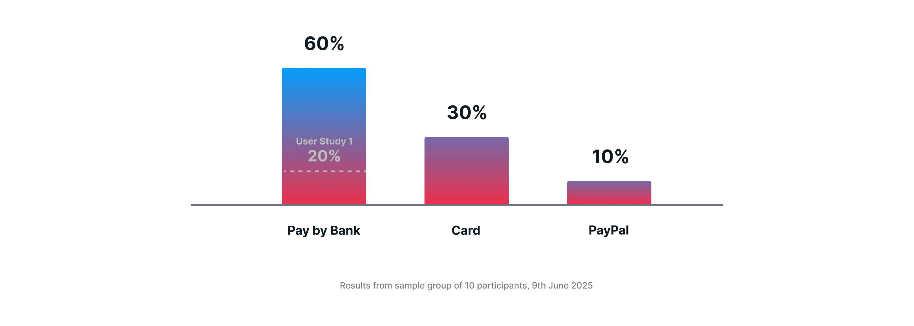
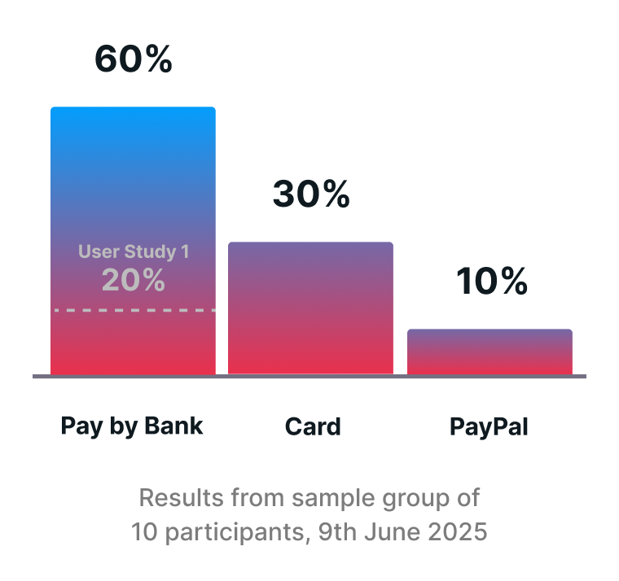
Users also completed the flow faster, completing a payment using Pay by Bank in 1 minute 38 seconds on average – an improvement of 54 seconds from User Study 1.
And most importantly, there was significant improvement in perceptions of trust. The data shows that the UI presentation, including the Recommended label and the clear benefit-driven copy, appears to have deepened user perception of good intent (ie. benevolence). Perceptions of integrity were enhanced, likely due to the added context and more visible structure of the method.
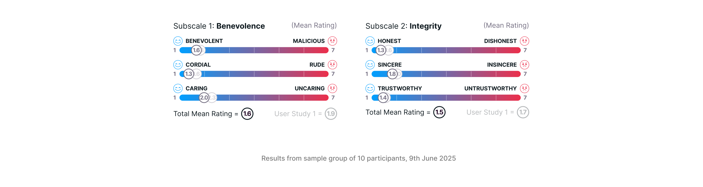
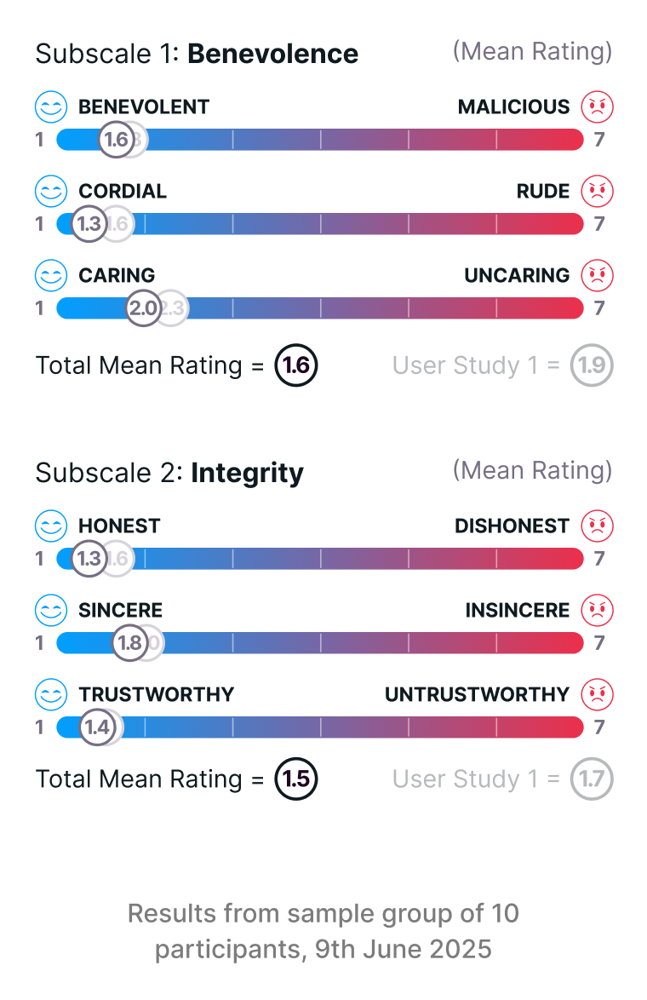
Perception of competence stayed roughly the same overall, likely related to users concerns about the transition into their banking app from the Ryanair website, which surfaced in the qualitative insights.
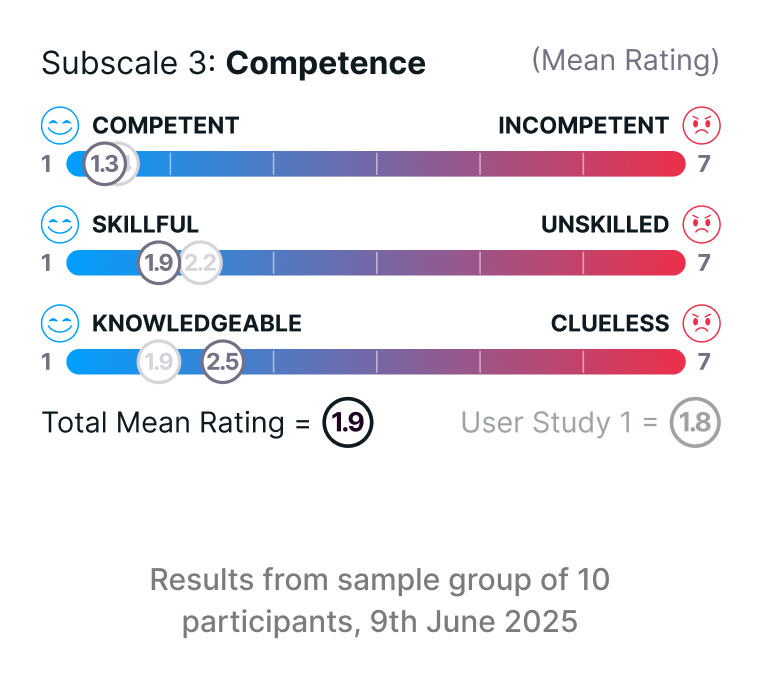
But broadly speaking, these results suggest that trust isn’t just about security – it’s about clarity, control, and consistency. All of which design can influence.
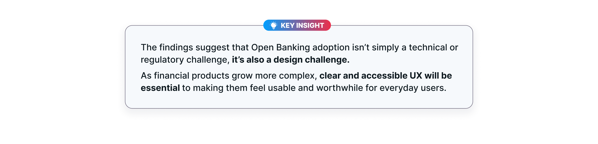
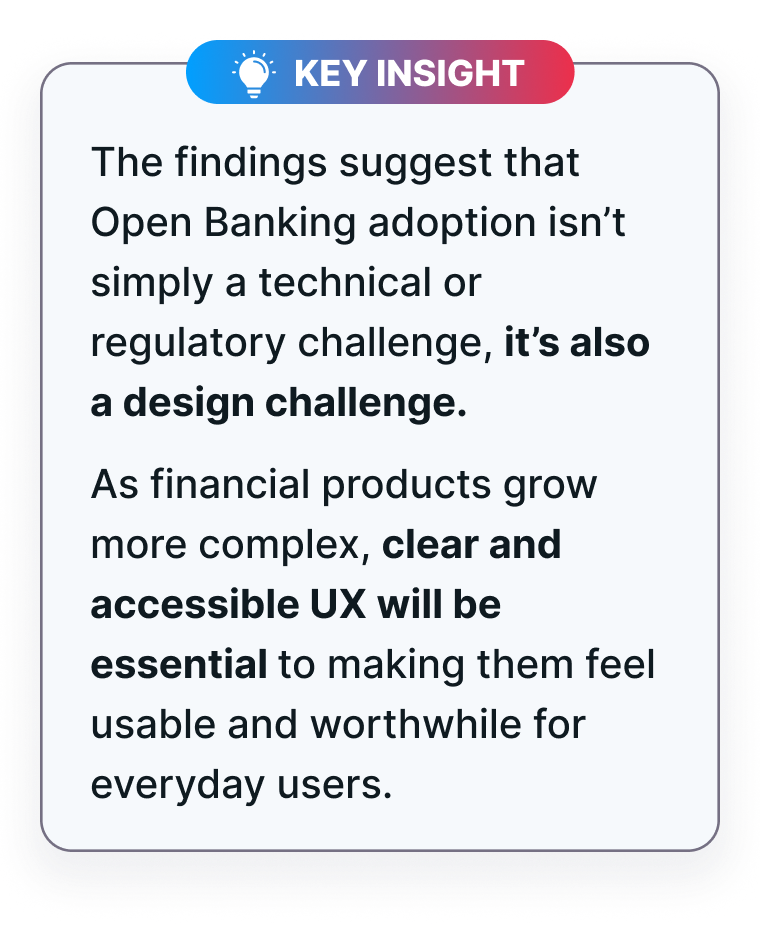
CONCLUSION
Why This Matters
The broader impact of this work is clear: adoption of financial technologies isn’t simply a technical or regulatory challenge. It’s also a design challenge.
UX choices directly shape how people experience trust in emerging payment methods. Even subtle changes, like clarifying the purpose of a billing step or explaining the security benefits upfront, can tip the balance between rejection and acceptance.
But the research also revealed how fragile trust remains. Transitions between the checkout and the user’s bank environment still caused hesitation, highlighting the need for a more consistent, shared design language across Open Banking providers.
The Bigger Picture
As payments evolve, whether through Open Banking, instant transfers, or AI-powered financial products, one truth stands out: technology alone does not guarantee adoption.
Trust must be earned continuously, step by step, through experiences that are clear, consistent, and human-centred.
For me, as a Product Design Manager at Global Payments, this research reinforced something I see every day: design can not be an afterthought in financial services. It’s a core enabler of trust, adoption, and ultimately, business success.
Final Thoughts
Open Banking holds enormous promise, but to reach its tipping point, it needs to feel as seamless and trustworthy as tapping a contactless card. That’s a design challenge as much as a technical one.
And so, in wrapping up, this brings me to my final question: how might we, as an industry, create a shared design language that makes Open Banking not just secure in theory, but trustworthy and desirable in practice for every user?